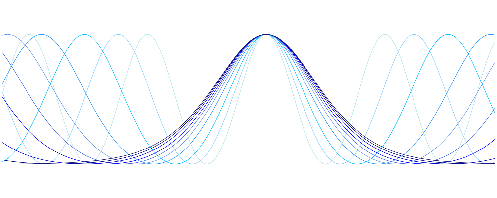

Thierry Laurens
Postdoctoral Assistant Professor
Thierry Laurens
Postdoctoral Assistant Professor
Postdoctoral Assistant Professor
Postdoctoral Assistant Professor
Postdoctoral Assistant Professor
University of Michigan
Department of Mathematics
Ann Arbor, MI
Office: 1847 East Hall
Email:

I am a Postdoctoral Assistant Professor in the math deparment advised by Peter D. Miller. My research interests are dispersive partial differential equations, completely integrable systems, and harmonic analysis.
I received my PhD in mathematics from UCLA in June 2023 under the guidance of Rowan Killip and Monica Visan. I was then a Van Vleck Assistant Professor at the University of Wisconsin until May 2026, advised by Mihaela Ifrim.
Fall 2026:
Math 285 (Honors Multivariable and Vector Calculus) sections 1 and 2
All material and announcements will be posted on the course Canvas page.